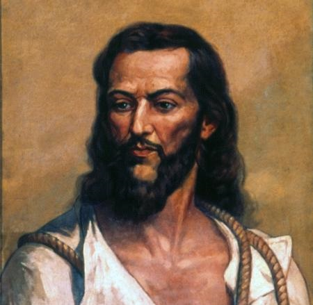
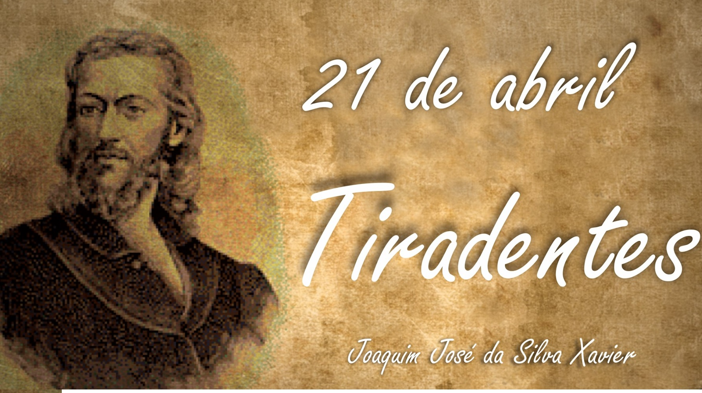
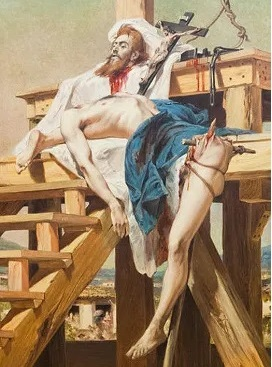
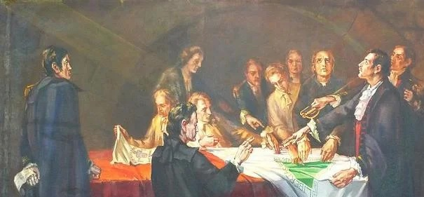

Tiradentes
Tiradentes foi o único dos envolvidos na Inconfidência Mineira a ser condenado à morte. Após a
Proclamação da República, ele foi transformado em herói.

Biografia
Quem foi tiradentes?
 Tiradentes nasceu em 12 de novembro de 1746 na fazenda de Pombal, entre as cidades hoje chamadas
de Tiradentes e São João del Rei, em Minas Gerais.
Ele foi um dentista, comerciante, minerador, militar e ativista político brasileiro, e atuava na época do Brasil
Colonial nas capitanias de Minas Gerais e Rio de Janeiro.
Joaquim José da Silva Xavier foi um participante da Inconfidência Mineira, um dos principais movimento contra o
domínio português exercido por governadores nomeados no território. Na Capitania de Minas Gerais, a conspiração
visava retirar o poder do Visconde de Barbacena.
Por ser um dos principais articuladores do movimento revolucionário, ao viajar para o Rio de Janeiro Tiradentes
foi capturado em 10 de maio de 1789 e condenado por traição à coroa portuguesa quando a conspiração foi
descoberta.
Tiradentes nasceu em 12 de novembro de 1746 na fazenda de Pombal, entre as cidades hoje chamadas
de Tiradentes e São João del Rei, em Minas Gerais.
Ele foi um dentista, comerciante, minerador, militar e ativista político brasileiro, e atuava na época do Brasil
Colonial nas capitanias de Minas Gerais e Rio de Janeiro.
Joaquim José da Silva Xavier foi um participante da Inconfidência Mineira, um dos principais movimento contra o
domínio português exercido por governadores nomeados no território. Na Capitania de Minas Gerais, a conspiração
visava retirar o poder do Visconde de Barbacena.
Por ser um dos principais articuladores do movimento revolucionário, ao viajar para o Rio de Janeiro Tiradentes
foi capturado em 10 de maio de 1789 e condenado por traição à coroa portuguesa quando a conspiração foi
descoberta.
O que se comemora em 21 de Abril?
Tiradentes foi reconhecido como herói nacional e um mártir da Inconfidência Mineira, quando a
República brasileira foi instalada através de um golpe em 15 de novembro de 1889.
Um dos primeiros atos do novo governo foi transformar a data em que ele foi executado, 21 de abril, em uma
festa cívica a ser celebrada nos quartéis.
Tiradentes é considerado um grande líder por ter lutado por seu povo e seus ideais, apesar de ser o mais
humilde entre todos os membros do movimento, Tiradentes foi quem assumiu as maiores responsabilidades.
Origem do Feriado de Tiradentes

No ano de 1789, uma parte da população de Minas Gerais fez uma tentativa de revolta separatista
contra o domínio dos portugueses no Brasil. Tiradentes foi ativista desse movimento e o único condenado à morte
por enforcamento
Por este motivo, as suas ações são reconhecidas como atos heroicos que lhe garantiram o status de importante
figura histórica brasileira.
Em 1965, através da Lei 4.897, de 9 de dezembro, Tiradentes foi declarado Patrono da Nação Brasileira.
O feriado foi estabelecido pela Lei Nº 10.607, de 19 de dezembro de 2002 durante o governo do presidente
Fernando Henrique Cardoso.
O nome de Tiradentes está escrito no Panteão da Pátria e da Liberdade Brasileiro (conhecido como o “Livro dos
Heróis da Pátria”) desde 21 de abril de 1992.
Curiosidades sobre Tiradentes
Durante a ditadura militar brasileira (1964-1985), Tiradentes foi retratado como barba e cabelos
compridos para se assemelhar a Jesus Cristo. Mas é provável que tivesse a cabeça raspada e o rosto barbeado,
como era comum fazer para evitar os piolhos entre os prisioneiros.
A morte de Tiradentes

Tiradentes foi enforcado e posteriormente esquartejado, no Rio de Janeiro, em 21 de abril de 1792.
Dia de Tiradentes
Partes de seu corpo foram expostos nos principais centros urbanos do Rio de Janeiro e Minas Gerais. A sua casa
foi queimada, o terreno salgado e todos os seus bens confiscados.
A prisão onde foi encarcerado é a atual sede da Assembleia estadual do Rio de Janeiro e recebe o nome de Palácio
Tiradentes. Igualmente, a cidade onde nasceu mudou de nome e passou a se chamar Tiradentes.
Causas da Inconfidência Mineira

"A insatisfação com uma possível derrama mobilizou as elites da capitania contra o domínio
português. Os inconfidentes planejavam assassinar o governador da capitania e proclamar o republicanismo na
Capitania de Minas Gerais. Tiradentes era um dos envolvidos na conspiração, pois, além de ser um defensor dos
ideais iluministas, também havia sido prejudicado pela gestão do visconde de Barbacena ao ser destituído do
comando da cavalaria, que fiscalizava uma importante estrada da região.
O movimento conspirado pelas elites mineradoras, entretanto, não chegou a acontecer. Todos os envolvidos foram
denunciados por Joaquim Silvério dos Reis, que optou por denunciar o movimento para se livrar das dívidas
pessoais que havia adquirido com a Coroa Portuguesa. Assim, em 1789, o visconde de Barbacena suspendeu a derrama
e prendeu os envolvidos na conspiração – entre eles, Tiradentes."
Prisão e condenação de Tiradentes
"A prisão de Tiradentes e outros inconfidentes ocorreu após a devassa (investigação). O processo
de julgamento dos envolvidos na Inconfidência estendeu-se por três anos. Durante esse período, muitos dos presos
negaram sua participação no movimento, com exceção de Tiradentes, que reconheceu abertamente seu envolvimento.
Alguns historiadores também afirmam que, durante os interrogatórios, muitos dos envolvidos denunciaram o papel
de Tiradentes na conspiração.
A sentença dos inconfidentes saiu em 1792 e determinava a pena de morte por enforcamento a dez pessoas.
Entretanto, por intermédio da Rainha D. Maria I, nove dos envolvidos na Inconfidência foram perdoados e
condenados ao degredo (expulsos do Brasil), enquanto a sentença de morte foi mantida para apenas um: Tiradentes.
Atribui-se esse fato a duas possibilidades: a primeira afirma que a sentença só foi mantida a Tiradentes por ele
não pertencer à elite mineradora e, portanto, não possuir influência na Coroa. A segunda possibilidade levantada
pelos historiadores é a de que, por falar abertamente do seu envolvimento na conspiração durante o
interrogatório, Tiradentes foi considerado um elemento perigoso pela Coroa e, por isso, deveria ser eliminado.
Assim, Tiradentes foi usado como bode expiatório pela Coroa Portuguesa. Ele foi enforcado na manhã de 21 de
abril de 1792, na cidade do Rio de Janeiro. Em seguida, teve o corpo esquartejado em quatro partes e espalhado
pela estrada de acesso a Ouro Preto. Sua cabeça foi exibida em uma estaca colocada na praça central da cidade. A
condenação de Tiradentes foi utilizada como demonstração de força da Coroa para evitar que futuras rebeliões
acontecessem."
Tiradentes como herói
"A figura de Tiradentes permaneceu esquecida durante o resto do período do colonial e também no
período imperial, principalmente pelo caráter republicano dos envolvidos na Inconfidência Mineira, como afirma o
historiador Boris Fausto:
A imagem de Tiradentes como herói foi construída com a Proclamação da República. Os republicanos desejavam
exaltar as figuras de republicanos brasileiros em contraposição aos tempos de monarquia e, por causa disso,
Tiradentes foi escolhido pelo caráter da sua condenação. Republicano convicto, Tiradentes foi exaltado como um
mártir do movimento republicano e, portanto, um herói nacional.
Em consequência disso, o dia de sua execução, 21 de abril, foi estabelecido como feriado, e sua imagem passou a
ser retratada, muitas vezes, parecida com a de Cristo crucificado, uma forma de relacionar Tiradentes como
mártir e herói."
Feriado
Tiradentes é considerado atualmente Patrono Cívico do Brasil, sendo a data de sua morte, 21 de
abril, feriado nacional. Seu nome consta no Livro de Aço do Panteão da Pátria e da Liberdade, sendo considerado
Herói Nacional.
Em 1965, durante a primeira fase do regime militar no Brasil, o marechal Castelo Branco, então presidente da
República, durante seu governo na Ditadura militar Brasileira, para reforçar essa imagem de Tiradentes, foi
sancionando a Lei Nº 4 897, de 9 de dezembro, que instituía o dia 21 de abril como feriado nacional e Tiradentes
como, oficialmente, Patrono da Nação Brasileira.
Carnaval
Tiradentes recebeu grande homenagem popular do G.R.E.S. Império Serrano, que desfilou em 1949 entoando o samba Exaltação a Tiradentes, cujos autores são Mano Décio, Estanislau Silva e Penteado.
Em 2008, a escola Unidos do Viradouro, com o tema "É de arrepiar", desfilou no carro de número 5 – "execução da liberdade" – o destaque com o carnavalesco Paulo Barros fantasiado de Tiradentes.